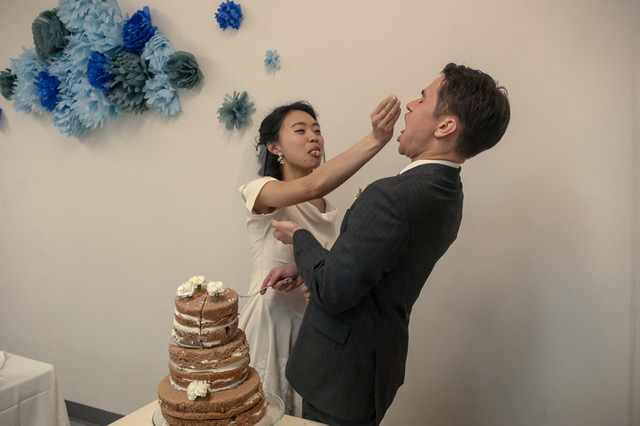
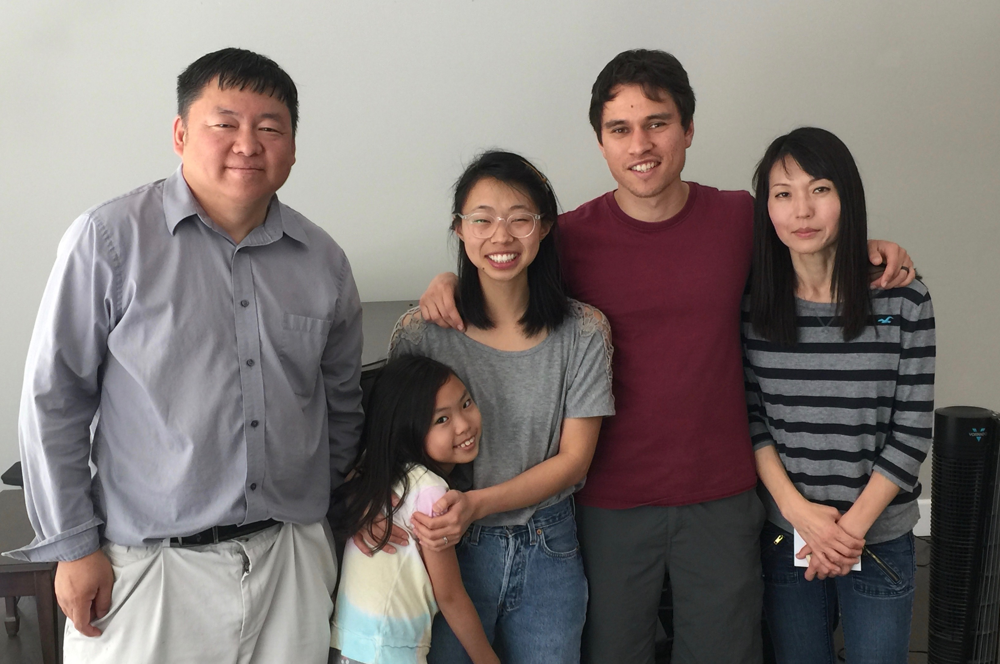
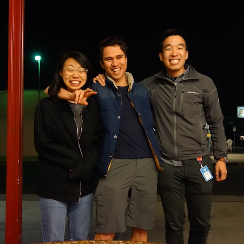
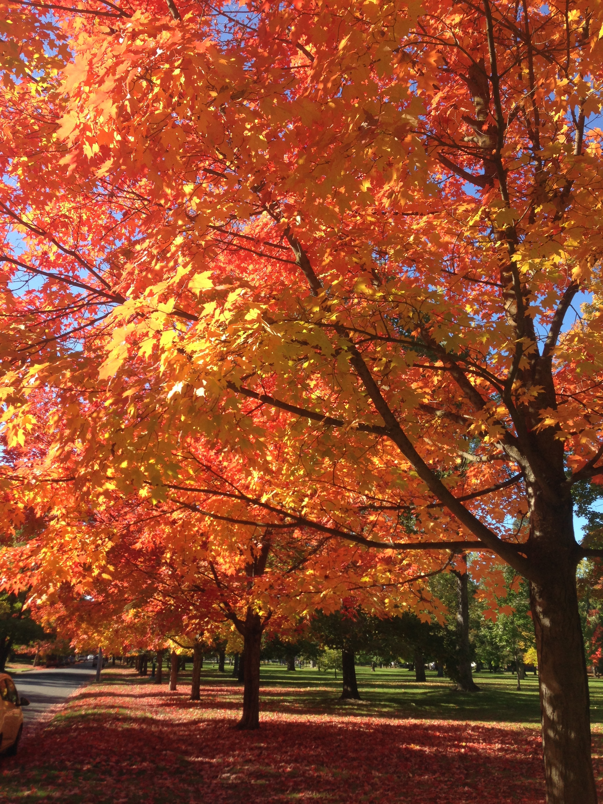
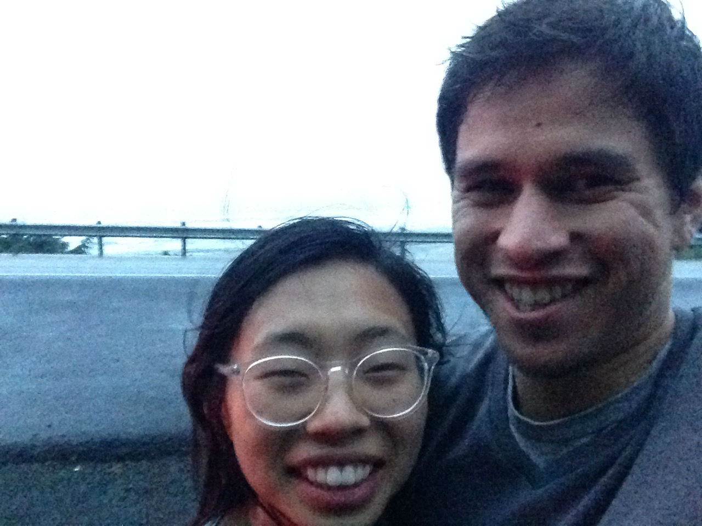
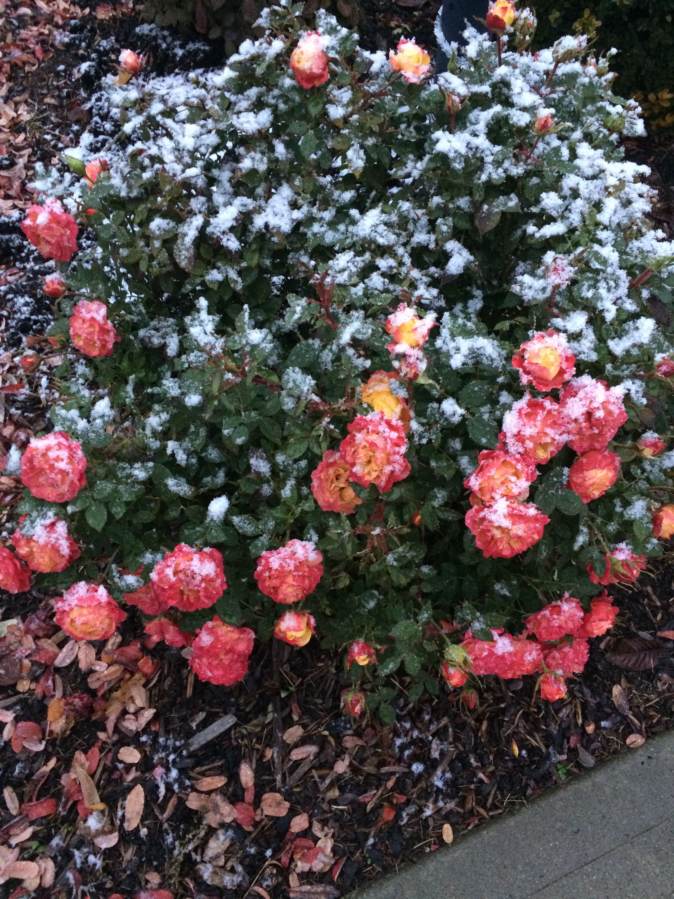
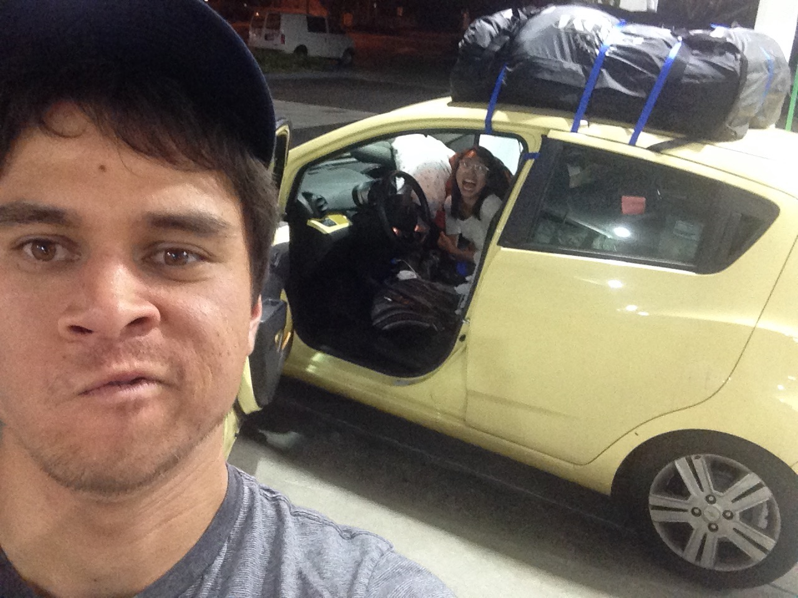
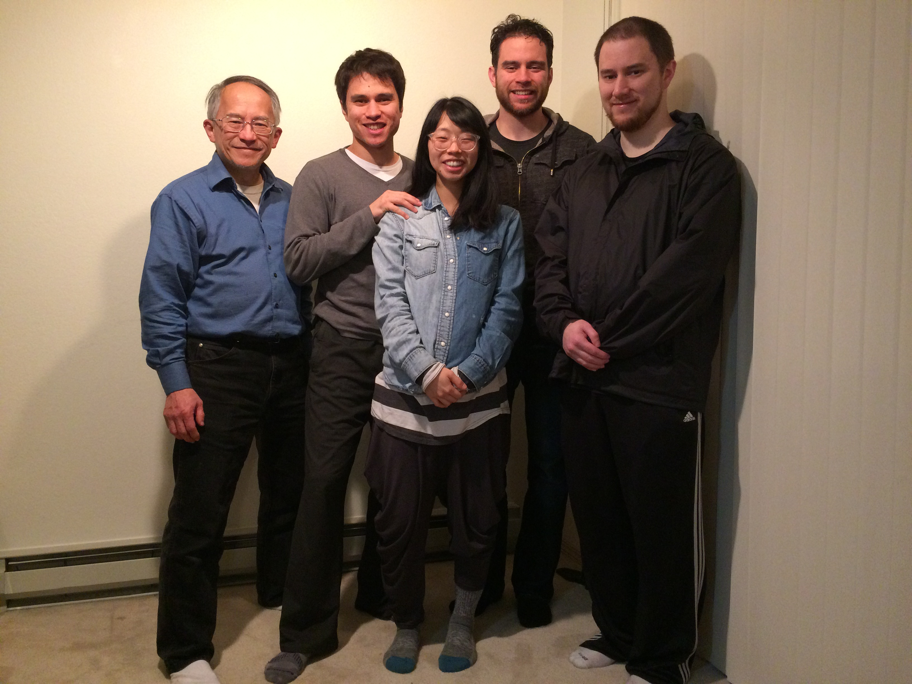
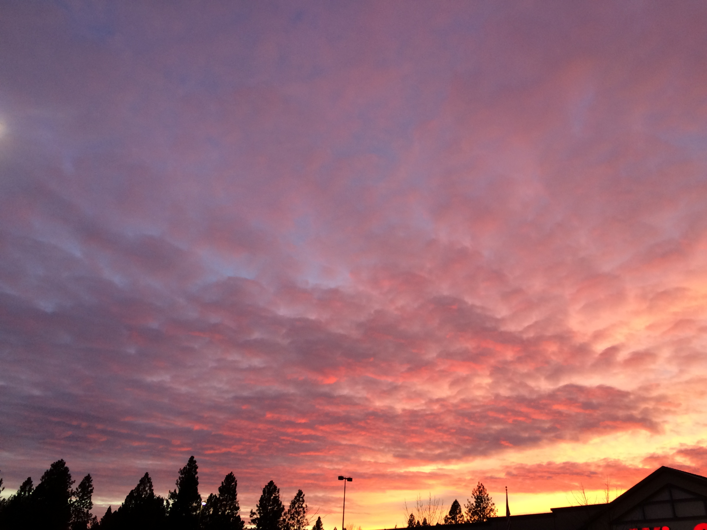

Back on Track
January 05, 2018
With 2017 coming to a close, we have been compelled to think about and remember God’s goodness in all His ways. Despite wrestling with our delayed departure to Cambodia and coming to Spokane, we have already seen some His good purposes of this detour.
This Past Year in Review
 
- In January, we got married! God brought so many loved ones together to take part in the beginning of our lives together.
- After the wedding, God provided homes for us (subleased a friend’s apartment and then moved in with Rebekah’s family). We were able to spend a special time building relationships with family and are so grateful!
- Until June, we were able to serve at Valley Korean Bible Church in LA and are still continually blessed by the relationships we formed there.
  - In mid-June, we moved to Spokane, WA to focus more on practical and spiritual preparation for Cambodia. While this was a bit of a transition, God has used our time here and has strengthened our marriage in Him more than we could have imagined. God has taught Rebekah many biblical truths in her studies and provided so much work for Ryan as he continues web development (as well as an opportunity to work with his own brother :).
- Since moving, we have been overwhelmed by the love we have received through the body of Christ at Christ Our Hope Bible Church in Spokane. We have been given many opportunities to serve (Sunday School and maintenance) and to learn (Bible studies & care group)!
 
Looking Forward
We are still planning on going to Cambodia in June or July of 2018, so until then, we will be…
- Continuing Bible courses and completing cultural learning classes (for Rebekah)
- Studying the Cambodian language, Khmer
- Saving up money for our time in Cambodia, so we can dedicate our first year to language and cultural learning
- Serving at Christ Our Hope Bible Church in Sunday school
- And… preparing to become parents! We are expecting our first child in mid-April of this year! This definitely means that we will need to be flexible in planning our departure, as health and circumstances may change some things!
Prayer Requests
Pray for Cambodia:
- Recently, there has been some political turmoil in the country as it prepares for general elections in July 2018. The situation has also affected visa laws and may continue to do so in the future.
- Pray for those in leadership in the government that they would carry out God’s will.
- Please continue to be in prayer for the churches and missionaries in Cambodia for wisdom and strengthened trust in God.
Pray for us:
- For Rebekah in her studies. She has struggled with remembering the importance of training and homemaking in the big picture. Please pray that she will have a desire to “please the one who enlisted” her regardless of the task (2 Tim 2:4, ESV).
- For Ryan as he tries to balance work, family, ministry, and his own relationship with God
- For our marriage and upcoming parenthood, that we would always remember our first Love and seek wisdom and counsel from Him (and those He puts in our lives).
Thank you for your faithfulness in praying for the lost and for us as we seek to reach them. We were also grateful to receive prayer requests from many of you in response to our latest email! Thank you for sharing in our ministry and allowing us to share in yours through prayer.
Ryan and Rebekah